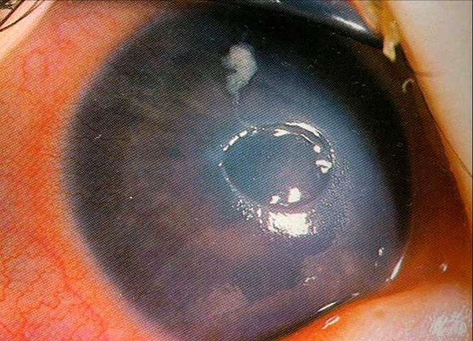

Cornea · Non-infective ulcers
Neurotrophic keratitis
Definition: It is a primary non-infective keratitis due to absence of corneal sensation.
Cause:
- Paralysis of the sensory nerve supply to the cornea which is carried by the ophthalmic division of the Trigeminal nerve.
Clinical picture:
- Symptoms: Defective vision as it is central ulcer but No pain (characteristic).
- Signs:
- 1) Corneal anesthesia (absent corneal touch reflex) & Ciliary injection.
- 2) Neurotropic ulcer: Central disc shaped ulcer with punched out edges, as there is no tendency for healing. It progresses deeply, increases rapidly in size, and finally perforates.
Treatment:
Treatment of the ulcer along the usual lines but mainly bandage to prevent recurrences:
- Artificial tears eye drops by the day and ointment at bed time.
- Sealing of the puncta to preserve moisture.
- Therapeutic soft contact lenses.
- Median or paramedian tarsorrhaphy.
